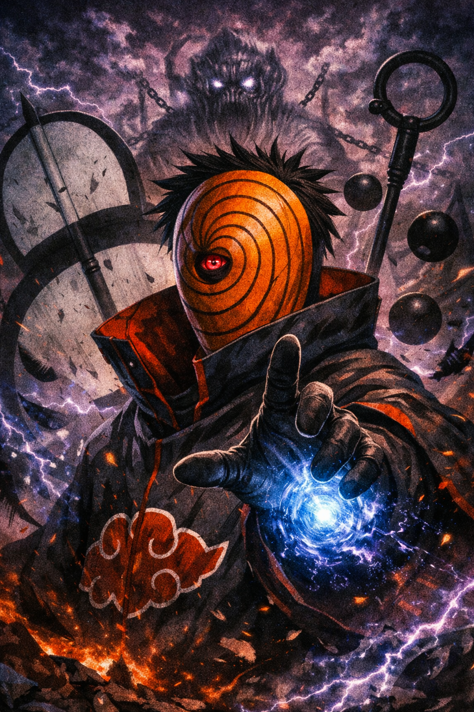
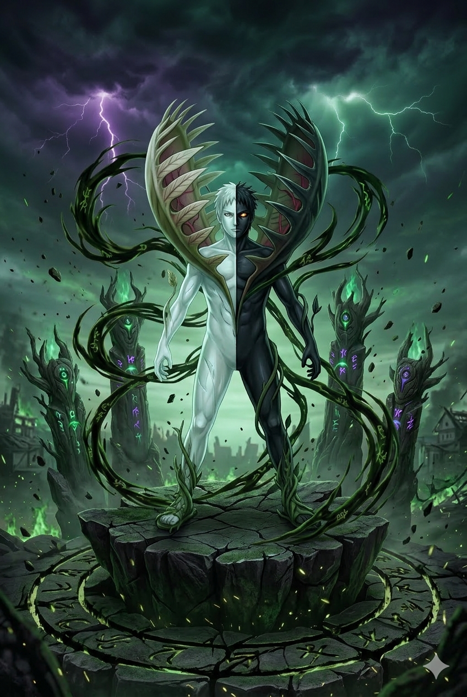
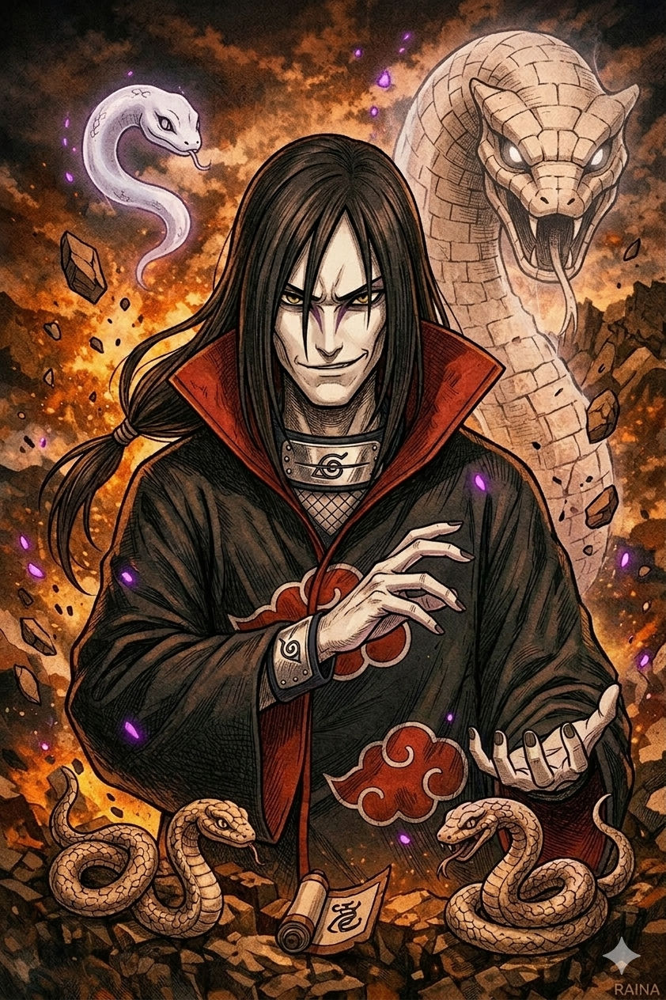

Bem-vindo à Wiki da Akatsuki

Explore o mundo sombrio e fascinante da Akatsuki, a organização de ninjas renegados mais temida do universo de Naruto. Descubra os segredos, membros e histórias por trás dessa enigmática facção.
Membros da Akatsuki
A Akatsuki é composta por um grupo de ninjas renegados, cada um com habilidades únicas e especializadas sob a liderança de Pain.
Itachi Uchiha
O Gênio Uchiha
Um dos membros mais poderosos da Akatsuki, conhecido por seu Sharingan avançado e domínio do Genjutsu. Itachi possui inteligência estratégica incomparável.
Madara Uchiha
O Lendário Guerreiro
Fundador do clã Uchiha, Madara é uma força da natureza com poder bruto incomparável. Seu Mangekyo Sharingan revela habilidades devastadoras.
Tobi (Obito)
O Mascarado Enigmático
Misterioso e estratégico, Tobi oculta sua verdadeira identidade por trás de uma máscara. Possui a habilidade de teletransporte e phase através de matéria.
Pain (Nagato)
O Líder Absoluto
Líder supremo da Akatsuki, Pain possui o lendário Rinnegan e consegue controlar múltiplos corpos simultaneamente com poder devastador.
Konan
A Rainha do Papel
Única mulher da Akatsuki que perdeu Yahiko. Konan manipula papel de forma criativa e letal, com paixão pela organização.
Kisame Hoshigaki
O Homem-Tubarão
Parceiro de Itachi, Kisame é um ninjutsu de água de classe S. Sua espada viva Samehada absorve chakra dos inimigos.
Deidara
O Artista da Explosão
Jovem e impulsivo, Deidara cria explosivos através de uma boca localizada em suas mãos. Considera seu trabalho uma forma de arte.
Sasori
O Maestro das Marionetes
Gênio em criação de marionetes, Sasori transformou seu próprio corpo em obra de arte. Controla centenas de marionetes antigas de seu clã.
Kakuzu
O Coração Eterno
Imortal através de transplante de corações, Kakuzu é um caçador de recompensas obcecado por dinheiro e poder.
Hidan
O Imortal Religioso
Membro mais novo da Akatsuki, Hidan é imortal através rituais religiosos. Seu nome é escrito com caracteres que significam "espírito eterno".
Zetsu
A Sombra Escondida
Ser único e misterioso, Zetsu pode se dividir em entidades negra e branca. Trabalha como espiã infiltrada da organização.
Orochimaru
O Lendário Sannin
Um dos Três Legendários Sannin, Orochimaru é mestre em ninjutsu de cobra e procura a imortalidade através da tecnologia e experimentação.